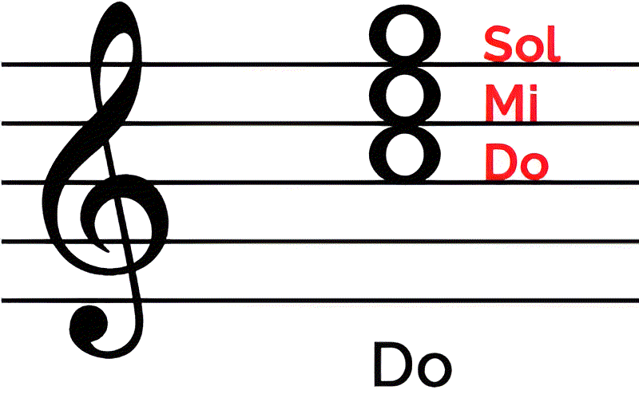
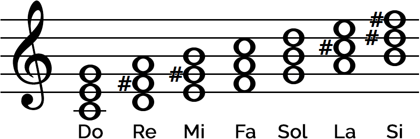

Un acorde es la unión de tres o más notas diferentes que producen un sonido armónico🎶. Son la base de muchas composiciones musicales. Los acordes se forman tomando una nota principal llamada tónica y agregando otras notas a cierta distancia musical, conocidas como intervalos. Por ejemplo, el acorde de Do está compuesta por las nota Do, Mi y Sol.

Los acordes mayores tienen un sonido alegre, brillante y estable. Son muy usados en música pop, rock y música clásica. Los acordes menores tienen un sonido más serio, melancólico o emotivo. Cambian ligeramente una nota respecto al acorde mayor.

Entre los acordes más usados están Do (C), Sol (G), Re (D), La menor (Am) y Mi menor (Em). Son comunes en canciones para principiantes.
Pulsa 🔊 para escuchar cómo suena cada acorde.
| Acorde | Notas | Tipo | Escuchar |
|---|---|---|---|
| Do (C) | Do - Mi - Sol | Mayor | |
| Re (D) | Re - Fa# - La | Mayor | |
| Mi (E) | Mi - Sol# - Si | Mayor | |
| Fa (F) | Fa - La - Do | Mayor | |
| Sol (G) | Sol - Si - Re | Mayor | |
| La (A) | La - Do# - Mi | Mayor | |
| La menor (Am) | La - Do - Mi | Menor | |
| Mi menor (Em) | Mi - Sol - Si | Menor | |
| Re menor (Dm) | Re - Fa - La | Menor |
Puedes dejar tu opinión, sugerencias o información adicional.
Muy buena explicación, entendí las notas musicales fácilmente.
Me gustó mucho el diseño y las imágenes usadas.
Sería genial agregar ejercicios interactivos más adelante.